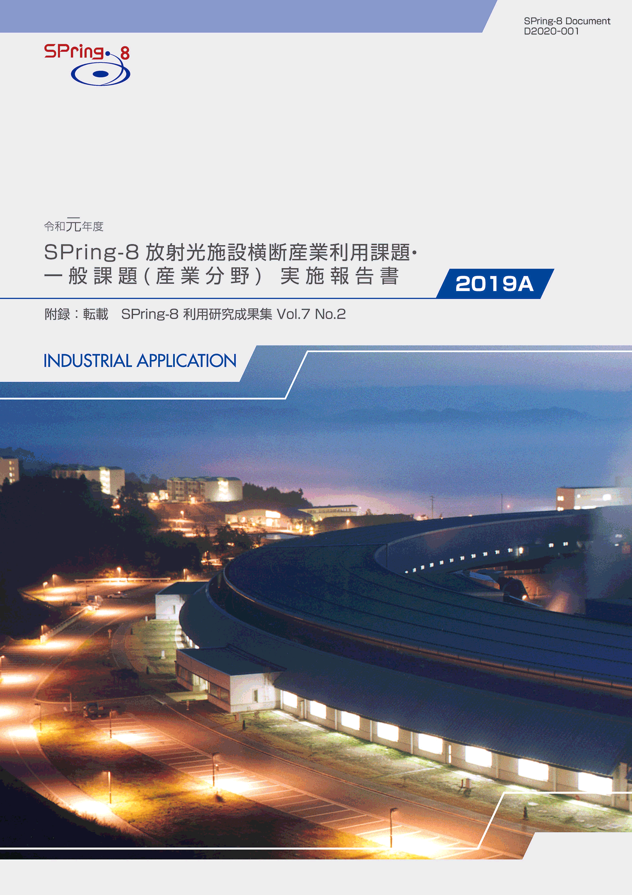
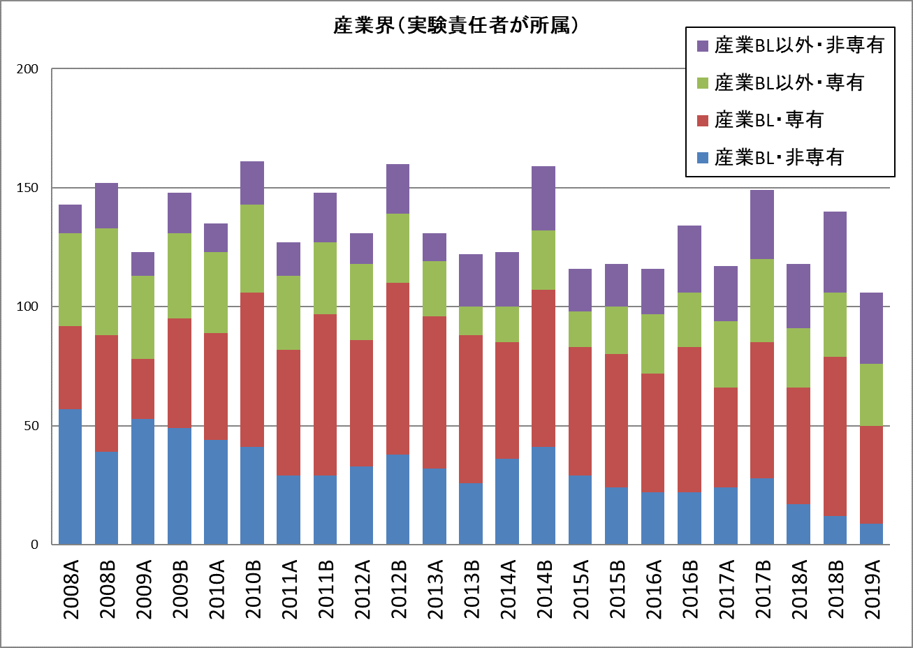

1. はじめに2. 課題募集制度の概要
3. 成果公開の考え方
4. 実施状況
5. 産業利用分野の利用動向
6. 報告書
* 送付を希望される方は、連絡先（氏名、所属、〒住所、E-mail）をご記入の上、 事務局 support@spring8.or.jp までE-mailでご連絡ください。
2019A期は2018A, B期に引き続き、領域指定型重点課題「放射光施設横断産業利用課題」と一般課題（産業利用分野）の募集を行った。本報告書はこれらの課題で実施された産業利用分野における課題実施状況の報告を目的として、SPring-8利用研究成果集としての審査を行わなかった課題の報告書を収録したものである。なお、3本の産業利用ビームライン以外を対象にした「先進技術活用による産業応用課題」の募集も2019A期より開始となったが、当該課題は実施報告書作成を求めていないので本報告書の対象とはしていない。更に2019A期より産業利用ビームラインを対象として産業利用準備課題の募集と実施を開始したが、成果専有課題であるため本報告書の対象ではない。
- 一般課題（産業利用分野）
一般課題（産業利用分野）の課題とは、課題申請の際に産業利用分野（I）での課題審査を希望した成果非専有の一般課題（課題審査は課題審査委員会産業利用分科会が行う）である。なお、実験責任者もしくは共同実験者に民間企業もしくは、それに準じる機関に所属する者が含まれていることを申請要件としている。民間企業に準ずる機関とは、民間企業からの委託による試験・研究・開発を事業に含んでいる機関と定義している。また、地方自治体が設置している公設置試験場や地方独立行政法人等（○○県工業技術センター）は、民間企業に準ずる機関から除外している。産業利用ビームライン以外での実施を希望する一般課題（産業利用分野）は他分野の一般課題と同様に課題募集は年2回であるが、3本の産業利用ビームラインにおいては年6回（半期3回）の募集を行う。一般課題（産業利用分野）に特徴的な制度は以下の6項目である。
- 産業利用ビームラインI（BL19B2）、II（BL14B2）、III（BL46XU）は半期ごとに3回(1期、2期、3期)の課題募集を行う（年6回課題募集を実施）。これらのビームラインでは成果非専有の一般課題は、審査希望分野が産業利用分野である一般課題（産業利用分野）のみ申請を受付けている（これらのビームラインを指定した申請であるものの、審査希望分野が他分野の課題は申請者の希望にかかわらず産業利用分野で審査する）。*注）
- 新規利用拡大の観点から課題審査において利用経験を考慮する。
- 民間企業利用拡大の観点から課題審査において所属機関を考慮する。
- 課題実施後約2～4か月以内に所定の書式の産業利用課題実施報告書を提出する。なお、この報告書はSPring-8利用研究成果集として審査を受けることも可能である。
- 全採択課題に担当コーディネーターを配置する。
- 科学技術的妥当性に関する審査は
(1)産業基盤技術としての重要性および発展性
(2)社会的意義および社会経済への寄与度の観点を重視して実施する
に重点をおいて実施する。
*注）産業利用ビームライン3本でも大学院生提案型課題は受付けている。一般課題（産業利用分野）と同様の審査が行われる。
- 放射光施設横断産業利用課題
「放射光施設横断産業利用課題」を領域指定型の重点研究課題として、2017年9月25日に指定した。その狙いは以下のとおりである。
近年、産業界の利用を目的とした放射光施設が日本国内に複数設置され、産業界による放射光利用機会も大きく拡大したため、それぞれの施設の性能や利用制度の特徴を活かした放射光利用が望まれる。しかし、施設ごとに利用者が固定化する傾向も見られ、各施設の特徴を十分に活用した利用になっているとは言えない。放射光施設横断産業利用課題は、最適な施設における放射光産業利用実験の実施促進とそれを通じた利用成果の拡大を目指している。
2-1） 募集の対象
SPring-8以外の日本国内に設置された放射光施設での実験結果を踏まえ、SPring-8利用が適すると判断された産業分野の課題を募集の対象としている（課題申請時にSPring-8以外の施設での実験が実施済みもしくは採択済みであることが必要）。また、一般課題（産業利用分野）と同様に、実験責任者または共同実験者に、民間企業または産業界に準ずる機関等に所属する者を含むことも課題申請の要件としている。
2-2） 対象ビームライン、シフト数割合、及び募集
産業利用ビームラインI（BL19B2）、II（BL14B2）、III（BL46XU）を対象に、ユーザー実験に供するビームタイムのうち20%以内（施設留保を含めたユーザータイムの16%以内）を配分する。課題募集は一般課題と同時期に半期3回行う。
2-3） 審査
一般課題（産業利用分野）に先んじて課題審査委員会産業利用分科会が審査を行う。なお、放射光施設横断産業利用課題として不採択となった課題は、自動的に一般課題（産業利用分野）の課題として、他の一般課題と一緒に改めて審査される。放射光施設横断産業利用課題においては一般課題（産業利用分野）の観点に加えてSPring-8と他施設の利用の有用性も考慮して審査する。
2-4） 報告
WEBより提出するビームタイム利用報告書、利用実験課題報告書に加えて課題実施後約2～3か月以内に所定の書式の放射光施設横断産業利用課題実施報告書を提出する。なお、この報告書はSPring-8利用研究成果集として審査を受けることも可能である。
成果の公開については、放射光施設横断産業利用課題、一般課題（産業利用分野）ともに他の成果非専有の一般課題と同様に学術誌上への論文掲載（博士論文も含む）もしくはSPring-8利用研究成果集への採録による成果公開が求められる。この産業利用課題実施報告書及び放射光施設横断産業利用課題実施報告書の提出は成果の公開とは認定されないが、これらの報告書は著者からの申し出により課題ごとにSPring-8利用研究成果集としての審査を受けることが可能である。SPring-8利用研究成果集としての審査を受けない実施報告書は、JASRIコーディネーター等による校閲を経て課題実施期が終了して約6か月後に出版･公開されるが、それ以外はSPring-8利用研究成果集としての掲載をもって公開とする。なお、利用研究成果集は、複数課題で1報も認めているが、継続した研究であっても放射光施設横断産業利用課題、一般課題（産業利用分野）ともに1課題あたり1報を原則としている（例外：研究内容に継続性がある成果公開優先利用課題との統合）
以下に令和元年度2019A期の放射光施設横断産業利用課題、及び一般課題（産業利用分野）の応募・採択結果を表1、表2にまとめる。
- 応募・採択結果 放射光施設横断産業利用課題
表 1．応募時期及び研究機関別課題応募・採択結果
＊放射光施設横断産業利用課題では不採択となり、一般課題(産業利用分野)で再審査で採択された課題を除く(A3期1課題)。募集時期 機関分類 応募数採択数*採択率（%）第1期募集学官11100.0産業界00-合計11100.0第2期募集学官11100.0産業界22100.0合計33100.0第3期募集学官22100.0産業界200.0合計4266.7総計8675.0
放射光施設横断産業利用課題の2019A期を通じた応募数は8件でそのうち6件が採択され、応募数、採択数ともにこれまでの最多となった。産業界からは4件の応募があり、2件が採択となった。不採択となった2件のうち1件は一般課題（産業利用分野）で採択となったため、事実上の不採択課題は1件のみであった。申請課題のうちSPring-8と並行して利用した施設は、あいちSRセンター、九州シンクロトロン光研究センター（佐賀LS）、NewSUBARUで、申請された8課題のうち5課題はSPring-8のみで実施可能なBL46XUでのHAXPES実験（採択は4課題）であった。この他BL19B2での小角散乱が2課題、BL14B2でのXAFS測定に1課題（一般課題として採択）の申請があった。なお、2018A, B期ともに申請要件未達で不採択となる課題があったが、2019A期は8課題全てが申請要件を満たしていた。実施2年目になって利用制度の認知度が高まったことの現れと考えている。
- 応募・採択結果 一般課題（産業利用分野）
表2．応募時期及び研究機関別一般課題応募・採択結果
*応募数と採択数には放射光施設横断産業利用課題で不採択となり、一般課題として再審査されて採択となったA3期の1課題を含む。一般課題と同時に審査される大学院生提案型課題の応募数（A1期 7課題、A2期 8課題、B3期 9課題）、採択数（A1期 3課題、A2期 6課題、A3期6課題）を除く。12条課題として扱われるJASRI職員が実験責任者の一般課題（応募A1期 2課題、A2期2課題、A3期5課題、採択A1期2課題、A2期2課題、A3期4課題）を含む。応募数と採択数には先進技術活用による産業応用課題で不採択となり、一般課題として再審査されて採択となったA1期の2課題を除く。募集時期 機関分類 応募数＊採択数採択率（%）第1期募集 学官332575.8産業界161381.3合計493877.6第2期募集 学官161593.8産業界2150.0合計181688.9第3期募集 学官282175.0産業界3133.3合計312271.0総計987677.6
一般課題（産業利用分野）の2019A期と2018A期を比較すると応募課題数、採択数、採択率のいずれもほぼ同じであった。なお、産業界からの課題申請数は36から21、採択数も26から15と大幅に減少し、産業界による成果占有課題利用の傾向がさらに強くなった。
- SPring-8利用研究成果集としての審査
前記のとおり2011B期より成果公開の扱いが変更になったため、実験責任者の希望に応じて重点産業利用報告書をSPring-8利用研究成果集（現在はSPring-8/SACLA利用研究成果集）として査読審査を受けて公開文書として扱うことも可能とした。放射光施設横断産業利用課題及び産業利用分野の一般課題も同様で、SPring-8/SACLA利用研究成果集として審査を受ける公開文書とすることができる。SPring-8/SACLA利用研究成果集への公開は査読審査が終了し成果審査委員会での承認後となるため、SPring-8/SACLA利用研究成果集に投稿予定の課題は採録していない。このため、今回は2019A期の採録対象課題76課題（先進技術活用による産業応用課題に申請され一般課題（産業利用分野）で採択された2課題を含む）のうち、65課題を掲載する。（併せて前期までに実施された課題等も掲載する）
-
図1は産業利用ビームラインが現在の3本体制になった2008A期以降の産業界実施課題の推移である。図1が示すように、1，2月の運転がなかった2013B期を除いて毎年A期の実施課題数はB期よりも少なくなっているが、2019A期に産業界が実施した課題は106課題と2008A期以降で最も少なかった。中でも産業利用BLでの成果非専有課題の減少が顕著で2018A期のほぼ半分であった。産業利用BLで実施された成果専有課題は2018Aよりも8課題少ないが、2017A期とほぼ同じ41課題で、産業界が成果専有課題を利用する傾向が一層強くなった。なお、2019A期から開始した産業利用ビームラインで実施する時期指定成果専有課題に属する産業利用準備課題*は各ビームラインで1課題、合計3課題の実施があった。産業利用ビームライン以外の共用ビームラインでは、先進技術活用による産業応用課題を2019A期より募集を開始したが、産業界が実施する成果専有課題及び成果非専有課題の実施数は2018Aとほぼ同じであった。

図1. 共同利用実験として実施された産業界課題の実施数推移
本格的な課題申請に先立って、測定の可否や測定条件検討を目的とした課題。測定代行と同様、随時受付、来所不要であるが、2時間を上限にBL14B2、BL19B2、BL46XUで実施可能であれば、利用技術を限定せず（例えば、測定代行を実施していない多軸回折装置を用いた歪測定など）に受付ける。
附録 SPring-8利用研究成果集 Volume 7 No.2 (https://user.spring8.or.jp/resrep/?cat=31) より転載
「令和元年度 SPring-8放射光施設横断産業利用課題・一般課題(産業分野)実施報告書 (2019A)」送付を希望される方は、 連絡先（氏名,所属,〒住所,E-mail）をご記入の上、事務局 support@spring8.or.jp までE-mailでご連絡ください。